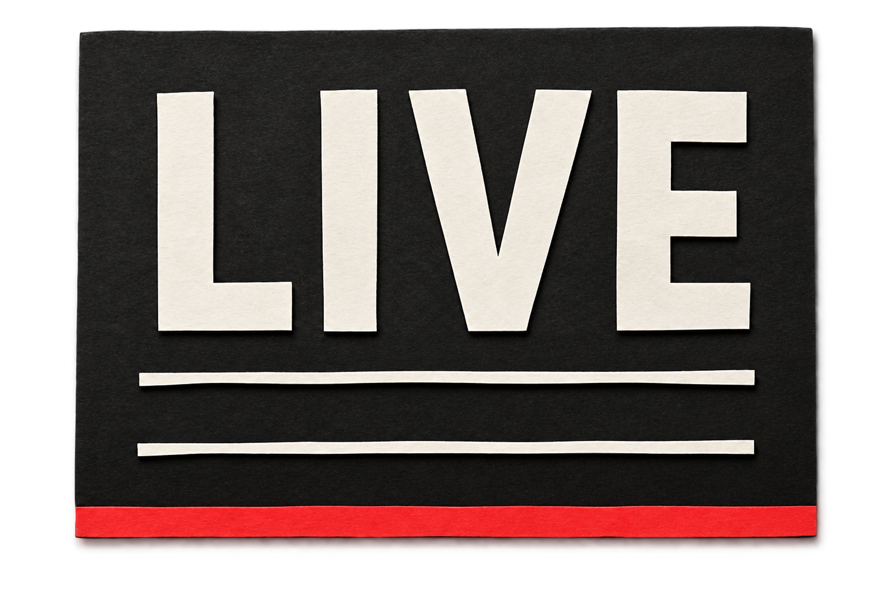
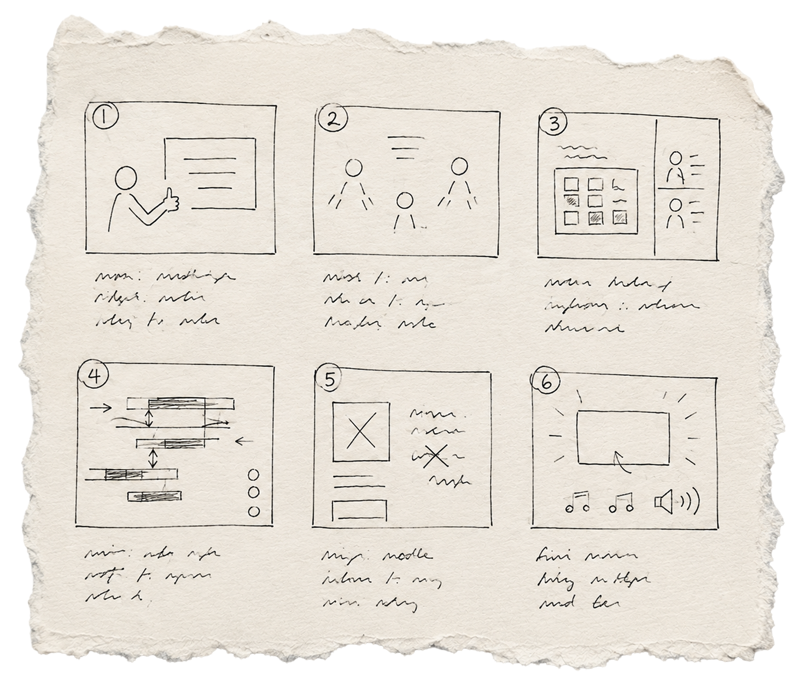
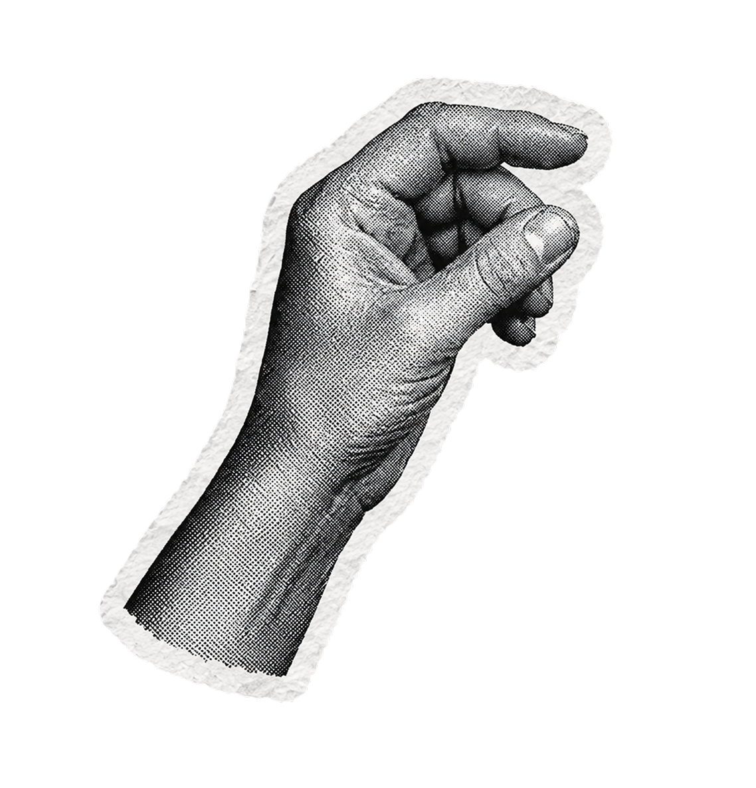
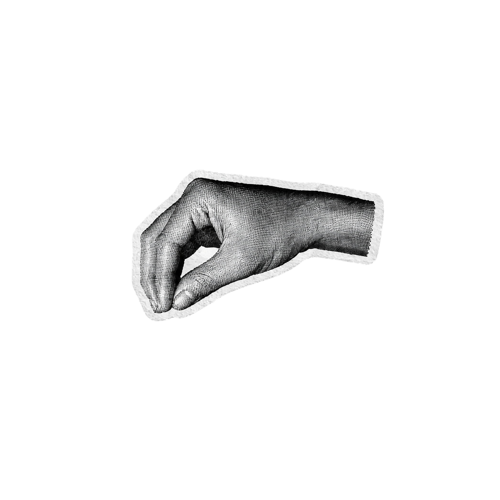
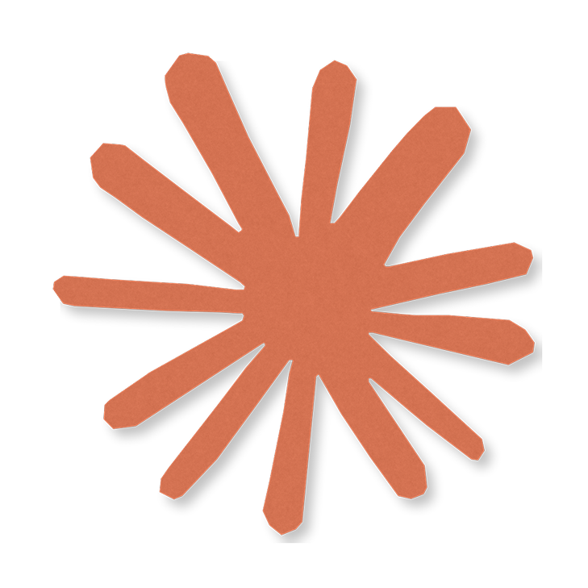
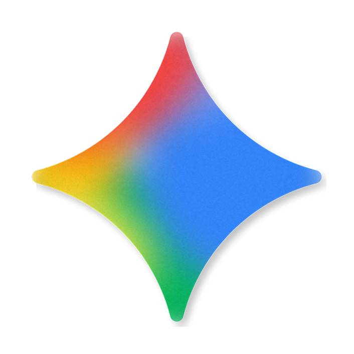

01
Working surface
Use VS Code, a terminal agent, or a desktop coding app with scoped filesystem access. Keep chat, code, plans, previews, and renders close enough to compare.
LIVE | Learners Intelligent Video Engineer
Start in VS Code, a terminal, or another agentic workspace that can reach the project files. A person brings the purpose and taste. Coding agents turn that direction into plans, scenes, revisions, and a final render that stays inspectable at every step.

01 | The working surface
The core requirement is not a particular chat app. It is a working surface connected to the project files, a terminal, and a preview. That is what lets conversation become inspectable production work.
Use VS Code, a terminal agent, or a desktop coding app with scoped filesystem access. Keep chat, code, plans, previews, and renders close enough to compare.
Node and npm install the project. React and TypeScript structure it. Remotion turns code into deterministic frames. FFmpeg and ffprobe encode and inspect the result.
Add only what the story needs: editing skills, TTS, image generation, or a tool such as Kling for generated motion. Confirm access, cost, rights, and output format before production depends on it.
Start local. Code, files, and local rendering form the dependable base. Generative services are optional asset pipelines, not the foundation of the film.
02 | The process
Each phase leaves evidence in the repository. Direction becomes a plan, the plan becomes reviewable scenes, and the scenes become a film only after they work on their own.
Phase 1 | Shape the story
The user and agents define the audience, purpose, narrative spine, and scene beats. Literal explanation and metaphor are designed together. A strong visual rule can carry meaning that narration would otherwise need to explain.
OUTPUT: narrative spine, scene beats, visual metaphor, words on screen
Phase 2 | Make the plan visible
Agents capture the decisions in an implementation plan, storyboard, script, scene map, and asset manifest. Concise session logs preserve what changed, what failed, and where another agent can safely continue.
OUTPUT: plan, storyboard, script, asset manifest, agent logsPhase 3 | Prove the language
Build a small style test before the full film. Set palette, typography, framing, motion behavior, and transition language. In parallel, prepare only the cutouts, textures, stills, and generated material the approved scenes require.
LIVE RULE: torn edges feel human, cut edges feel machine
Human Torn edge, tactile image, organic timingPhase 4 | Build and review
Each scene remains a standalone composition, so it can be scrubbed, paused, and revised without disturbing the full film. Agents code the motion. The human owns readability, rhythm, composition, surprise, and whether a beat feels right.
LOOP: code → stills → playback → human note → focused revision
Phase 5 | Assemble and deliver
Assemble the master only after the scenes hold up. Watch every join at normal speed. Keep the film silent, add music, use bespoke TTS, or record a voice. Then render the master and inspect the actual media file.
DELIVERY: resolution, fps, duration, codec, pixel format, audio, dropped frames03 | Creative control
The collaboration works because the human is not reduced to a prompt writer, and the agent is not treated as a taste oracle. Each side owns the part it can actually judge.
The director
The production team


04 | Learning through production
The LEI SDE team has used LIVE to create three video projects. Each production has taken less time as the system preserves useful decisions, tools, and review habits. At the same time, the videos have grown more interesting in structure and visual complexity.
Project 01 | Establish
The first project established the path from story and assets to coded scenes, human review, and a validated render.
Project 02 | Reuse
Reusable components, clearer plans, asset conventions, and better handoffs shortened the next build without removing human control.
Project 03 | Refine
Faster production cycles created room for more deliberate motion, richer visual ideas, and a more cohesive final edit.
LIVE is becoming more capable because each film teaches the next one. The goal is not only faster production. It is better creative work with less repeated setup.
We would love to hear your thoughts.05 | Lessons from the logs
These lessons came from building and revising the LIVE film. They turn specific mistakes into habits that make the next production calmer.
01 | Edit, not arithmetic
Remove dead screen time. Keep a beat that needs to breathe. Report duration instead of designing toward a convenient total unless the brief sets a hard limit.
02 | Protect the scene
A Remotion transition consumes time from both neighbors. Give it clean handles or frozen holds, then inspect the last beat and first readable beat at every join.
03 | Use punctuation sparingly
The clapboard worked as a structural hinge and became irritating at every cut. Keep one visual vocabulary, but use loud and quiet versions with intention.
04 | Verify the source of truth
Check paths, durations, installed tools, and composition IDs against the repository. Record contradictions and never silently propagate a stale claim.
05 | Keep scenes isolated
Do not damage a working scene to make the full film fit. Preserve the standalone composition and put master specific trims, holds, and joins in the assembly layer.
06 | Separate proof from approval
A clean type check proves the code compiles. A complete render proves frames were encoded. Only a human watch can judge meaning, rhythm, and feel.
06 | Technical map
LIVE connects a human conversation to a controlled production pipeline. The public model below explains how direction becomes a deterministic film without exposing private source structure.
Chat, editor, terminal, filesystem access, and local preview keep human direction connected to visible work.
Storyboards, scene specifications, scripts, asset records, and handoffs preserve decisions across agents and sessions.
React, TypeScript, and Remotion express every visual state as deterministic frame logic that can be reviewed at any time.
Approved local media can be extended with controlled image, video, speech, and audio generation when a scene requires it.
Independent scenes enter a master timeline, receive sound if needed, and pass encoding, metadata, and human review gates.
useCurrentFrame() drives animation. Any frame
must be renderable independently.
Seed randomness. Never let wall clock time or raw
Math.random() change a render.
Only reviewed media enters production. Source material, rejected attempts, and approved assets retain distinct states.
Use frame math, interpolation, springs, sequences, and transitions. Avoid browser timed animation in film code.
Inspect resolution, frame rate, duration, codec, pixel format, audio streams, and dropped frames.
Start with Node, npm, project dependencies, and FFmpeg with ffprobe. Pin the React, TypeScript, and Remotion versions so every agent renders through the same engine. Add new skills, command line tools, or media services only when the production requires their capability.
Give each scene one component, one duration source, and a standalone composition. Derive motion from frames, keep timing constants named, and reuse a small visual kit. Render probe stills around key beats, then watch the complete scene at normal speed.
They are asset pipelines. Confirm the provider, current model, price, rights, and output format before any paid call. Batch TTS by scene when rate limits are tight and keep one voice model across the film. For generated media, preserve approved references, record prompts, and inspect every result before it enters production.
The system turns decisions into durable production artifacts: the narrative, scene intent, exact copy, visual rules, asset status, review notes, and current handoff. A new agent begins from that evidence, verifies it against the current build, and continues the existing production instead of reinventing it.
Local and free tools form the default path. External services are checked for authentication, current capabilities, usage limits, rights, watermarks, and cost before they enter a plan. Paid generation requires a specific human decision about the modality, model, attempt count, and maximum spend.
Run lint and type checking. Enumerate compositions. Watch every scene and the master at normal speed. Inspect each join and the final hold. Render the delivery file, inspect its metadata and playback, and treat technical completion as a gate rather than creative approval.
The interface is collaboration
Let the agents handle the machinery, while every creative decision stays visible, discussable, and human directed.